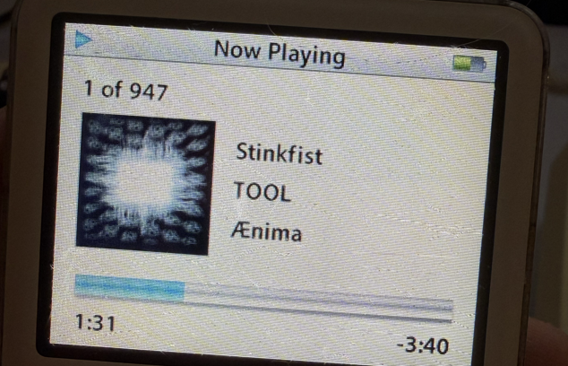
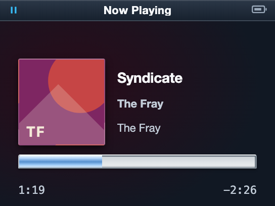
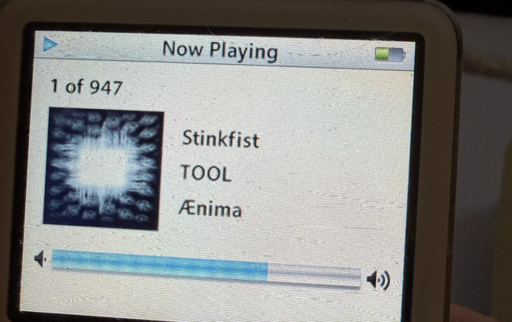
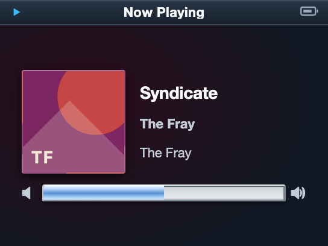

All states share the same 28px outer / 24px nominal channel raster cross-section, molded asymmetrical lip, recessed seam, concave neutral channel, and detached cast shadow.
Physical-reference and candidate LCDs use the same 408px display height. Aqua close-ups normalize the outer trough to 28 raster pixels once and show it at 4× nearest-neighbor scale.



